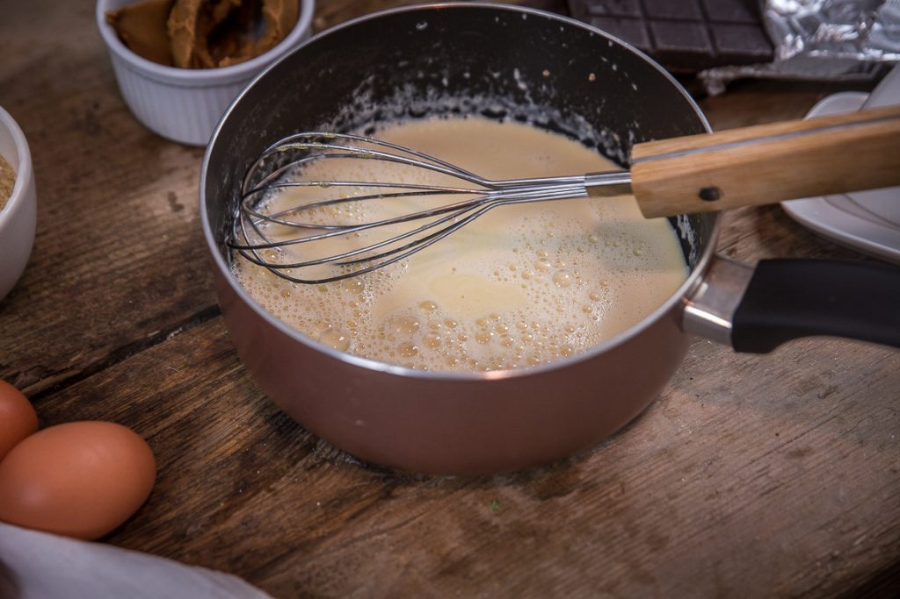
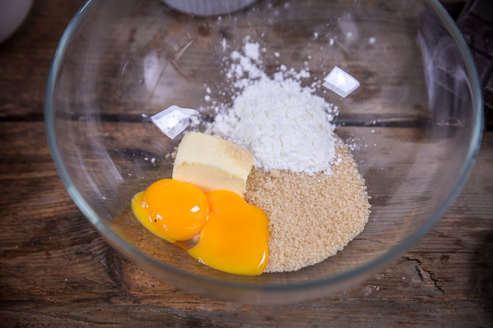
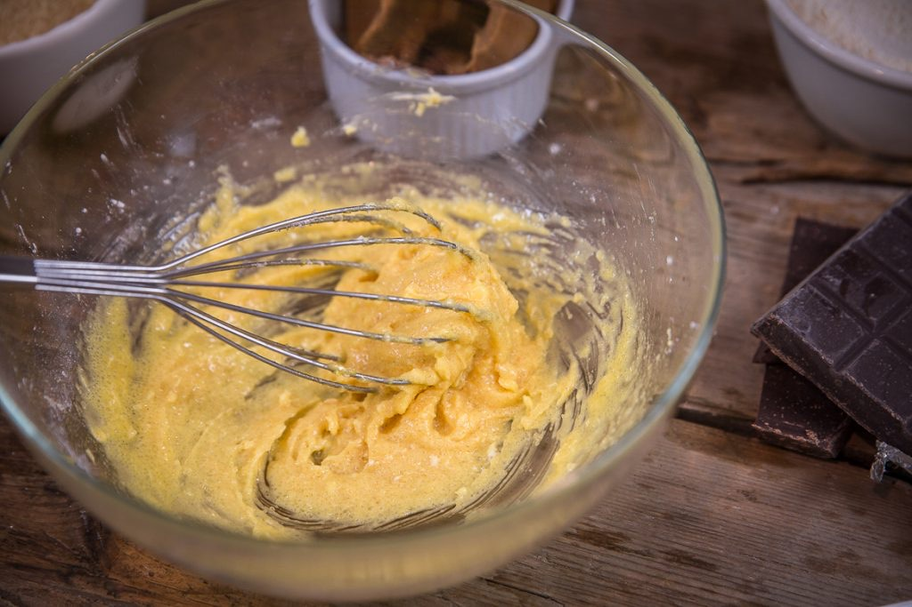
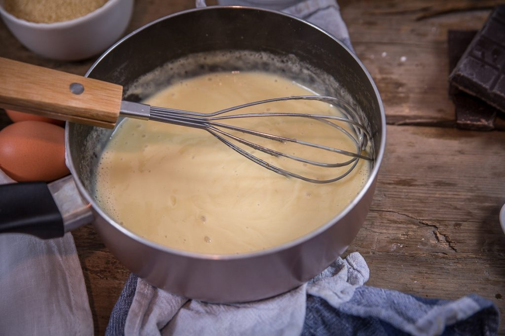
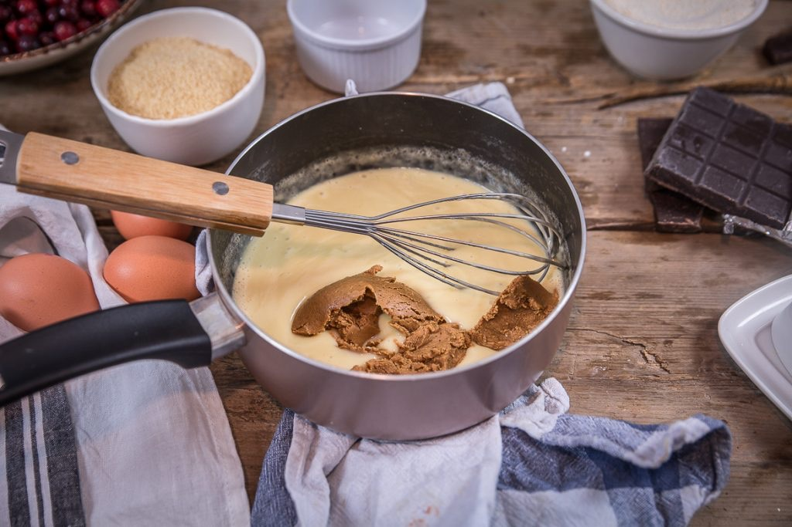
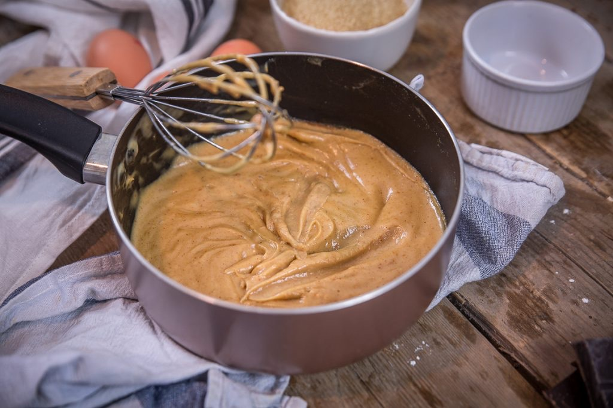
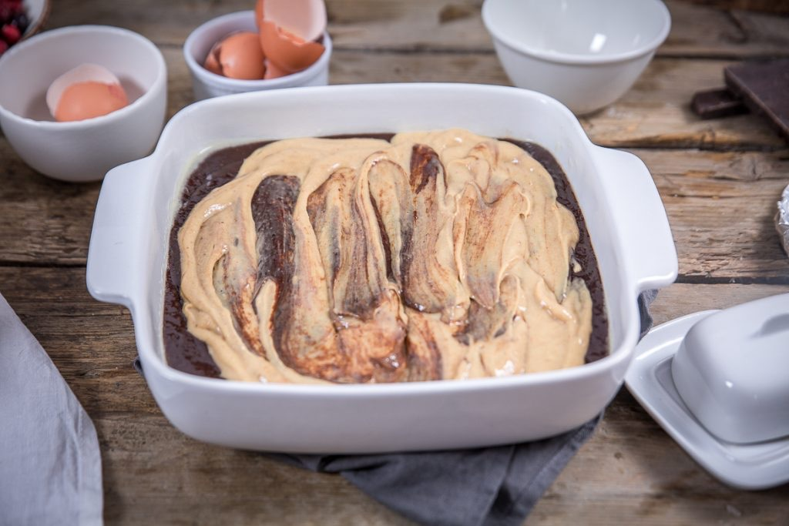
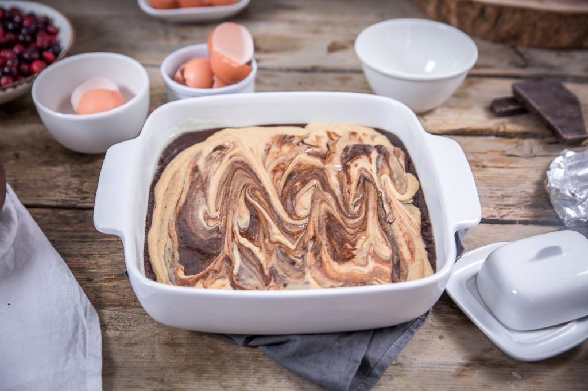
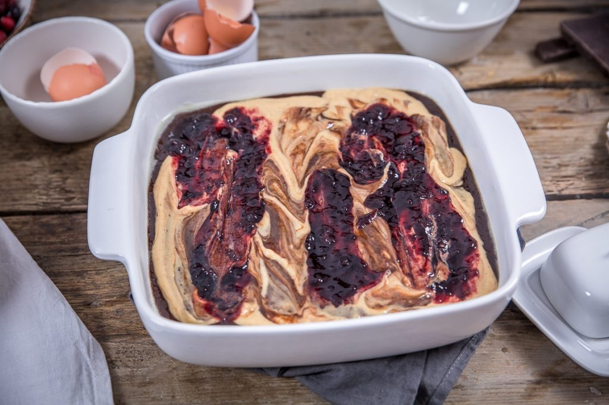
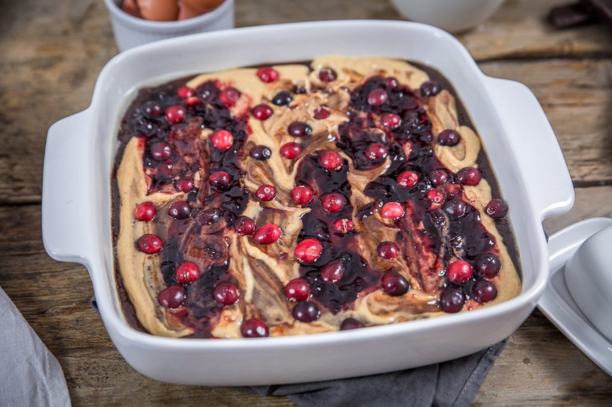

Brownies au beurre de cacahuète

Aujourd’hui je vous retrouve avec une recette ô combien scandaleuse! Il s’agit de la fameuse recette du brownies au beurre de cacahuète (confiture et cranberries) que vous avez vu passer il y a peu sur Instagram!!
Pour cette recette, c’est Jamie Oliver qui m’a grandement inspiré (du beurre de cacahuète, du chocolat et des fruits rouges je dis oui oui oui!!!)! Je regrette d’ailleurs qu’en France le beurre de cacahuète ne soit pas plus en vogue que ça… Moi c’est un produit que je consomme presque tous les jours, sur du pain, avec des bananes, dans un smoothie, bref j’en suis folle!! Je privilégie le beurre de cacahuète fait maison évidemment ou les marques bio ou celles qui ne contiennent pas d’huile de palme pour n’avoir que le bon! Car pour info, le beurre de cacahuète contient du bon gras, est riche en protéines et est bien moins calorique que le beurre (nut*** et compagnie… ) alors il serait temps de s’y mettre! J’ai d’ailleurs envie de faire des articles dédiés à certains ingrédients que l’on trouve dans mes placards et je pense que celui-ci en fera parti! Pour en revenir à notre brownies, je ne sais pas comment vous le décrire! Ça fait 4 fois que je fais cette recette (à chaque fois j’ai changé les fruits) mais je n’arrive jamais à prendre la photo par manque de temps… Cette fois-ci j’ai réussi à en faire une petite pour vous donner une idée de ce à quoi ressemble « la bête » et pour « enfin » vous donner la recette. J’ai fait ce brownie avec de framboises (j’avais fait des photos aussi) , ici avec des cranberries mais ma version préférée est celle avec des bananes!!!! A vous de tester et de me dire 🙂 (car oui là vous n’avez pas le choix vous DEVEZ tester). Je l’expliquerai plus bas dans le corps de la recette mais vous pouvez choisir de faire comme moi et laisser cuire le brownies 30 minutes pour obtenir un résultat super fondant (presque coulant) ou de passer la cuisson à 45 minutes et d’avoir quelque chose de plus « compact » (je suis désolée je ne connais pas le mot contraire de fondant). Quoi qu’il en soit je vous promets que vous allez vous régaler!! Je vous laisse maintenant découvrir la recette et j’espère qu’elle vous plaira (j’attends vos retours^^), en attendant je vous souhaite de passer une très belle journée ♥
Ci-dessus la version aux framboises réalisée cet été
Enregistrer
Enregistrer
Ingrédients
- Lait végétale ou animale - 250ml
- Vanille - 1 gousse
- Jaunes d'oeufs - 2 gros
- Cassonnade - 50g
- Maïzena - 1 càs
- Beurre doux mou - 20g
- Beurre de cacahuète - 2 bonnes càs
- Beurre doux - 115g
- Beurre salé - 115g
- Chocolat noir à 70% de préférence - 250g
- Cassonnade - 160g
- Oeufs - 4
- Farine - 150g
- Confiture de fruits rouges de votre choix - 2 càs
- Fruits (ici cranberries) - 80g
Instructions
- Fendre la gousse de vanille en deux et récupérer les graines
- Dans une casserole, verser le lait et ajouter les graines de vanille
- Faire frémir en remuant régulièrement
- Pendant ce temps, fouetter les jaunes, la maïzena, la cassonade et le beurre mou
- Verser le lait chaud sur cette préparation
- Mélanger de façon à obtenir un mélange homogène puis remettre dans la casserole
- Sur feu doux, remuer doucement afin que la crème épaississe (pendant 2 minutes environ)
- Hors du feu, ajouter le beurre de cacahuète
- Mélanger pour bien l’incorporer et réserver afin qu'elle refroidisse
- Beurrer votre moule et préchauffez le four à 180° (moi je ne beurre plus j'utilise une bombe graissante et c'est génial!!)
- Dans une casserole, faire fondre le beurre et le chocolat sur feu très doux
- Mélanger régulièrement à l'aide d'une spatule
- Une fois le chocolat fondu, sortir la casserole du feu et ajouter le sucre
- Laisser tiédir et ajouter les œufs un à un en remuant sans cesse jusqu'à obtenir une consistance homogène
- Tamiser la farine au dessus de cette préparation et mélanger jusqu'à obtenir un mélange bien homogène
- Verser la pâte à brownies dans votre moule préalablement beurré
- Ajouter la crème au beurre de cacahuète par dessus - Ne pas trop mélanger pour obtenir un effet marbré
- Déposer des cuillères à soupe de confiture au fruits rouges par dessus puis enfoncer légèrement les fruits par dessus
- Enfourner pour 30 minutes pour avoir un brownies bien fondant (ce que je fais) ou 45 minutes pour un brownies "moins fondant"
- Laisser refroidir 1h avant de servir (difficile de ne pas craquer avant, je n'ai jamais réussi^^)
- Bon appétit !










Les tips de la communauté
Recette très appréciée, testée avec succès par plusieurs utilisateurs. L'ajout de confiture est innovant et convainc même les détracteurs du beurre de cacahuète. Quelques retours mentionnent une texture moins fondante que prévu.
Astuces
- Utiliser la recette inspirée de Jamie Oliver (dosage éprouvé)
- Ne pas aérer trop la préparation - mélanger doucement à la cuillère
- Servir portion modérée - c'est un gâteau très lourd et riche
- Version banane: ajouter les bananes avant enfournage sans confiture
- La confiture apporte un excellent équilibre gustatif avec le chocolat
Variantes suggérées
- Version banane (sans confiture)
- Version purée de noisettes/framboises
- Utiliser une confiture autre que celle proposée
Ajustements signalés
- Texture peut être moins fondante en utilisant farine avec levure incorporée
- Résultat plus dense et bourratif que certains brownies classiques - normal pour cette recette
- Important: bien respecter le temps et température de cuisson